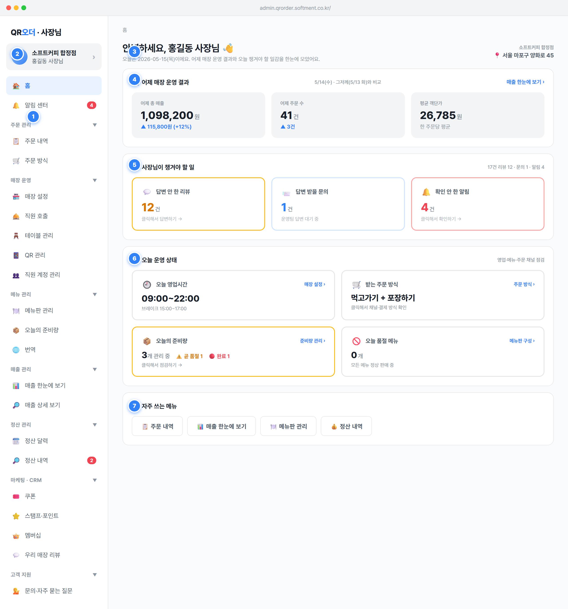

홈·알림 센터(_solo 그룹) / 주문 관리(주문 내역·주문 방식) / 매장 운영(매장 설정·직원 호출·테이블 관리·QR 관리·직원 계정 관리) / 메뉴 관리(메뉴판 관리·오늘의 준비량·번역) / 매출 관리(매출 한눈에 보기·매출 상세 보기) / 정산 관리(정산 달력·정산 내역) / 마케팅·CRM(쿠폰·스탬프·포인트·멤버십·우리 매장 리뷰) / 고객 지원(문의·자주 묻는 질문)..navitem.on 클래스(파란 배경)로 강조. 클릭 시 setSection(key) 호출 후 본문 렌더.state.sidebarOpen에 그룹별로 저장. 최초 진입 시 모든 그룹 펼침(_solo 제외 자동 펼침).NOTIFICATIONS.filter(!read)), 정산 내역=2(고정 목업값). 0이면 배지 숨김(n||undefined).groups[]: {label, items:[{key, ic, label, n?}]}).STORE.role(owner/staff)에 따라 항목 노출/활성 제어 — SPEC §1.6.2 권한 매트릭스.SECTION_MAP[key].fn(render 함수) + url 매핑..on).› 화살표로 진입 가능함을 표시. 박스 전체가 클릭 영역.setSection('내 정보') 라우팅.STORE_INFO.name · 사장님명 STORE_INFO.owner · 역할(owner/staff) 라벨.STORE_INFO.owner / STORE_INFO.name / STORE_INFO.addr.YYYY-MM-DD(요일) — 목업 고정값 2026-05-15(목).cursor:pointer, 호버 시 살짝 떠오름) → setSection('overview').DAY[TODAY_IDX-1], 그저께 = DAY[TODAY_IDX-2] (각 {gross, ocnt}).actual = gross − disc − pt − ref (SPEC §2.1). 환불은 원거래일 영업일 매출에서 차감(SPEC §1.5).grossDiff = 어제.gross − 그저께.gross, grossDiffPct = round(grossDiff/그저께.gross*100)(분모 0이면 0%).round(어제.gross / 어제.ocnt) — 홈 KPI는 총매출(gross) 기준 요약이라 매출 화면의 실매출(actual) 객단가와 값이 다름(라벨로 구분 권장). 주문 수 0이면 0.--line).setSection('reviews') + state.reviewFilter='wait' 설정 후 렌더(리뷰 화면을 '답변 대기' 필터로 연다).setSection('cs'). 알림 카드 클릭 → setSection('notify').REVIEWS.filter(r=>!r.reply).length (사장님 답변 reply 없는 건).CS_INQUIRIES.filter(c=>c.status==='답변 대기').length.NOTIFICATIONS.filter(n=>!n.read).length (없으면 목업 기본 4).setSection('store'). 오늘 요일 기준 영업시간 표시, 휴무면 "휴무". 브레이크타임 있으면 "브레이크 HH:MM~HH:MM" 보조 노출.setSection('order-type'). 현재 채널 모드(ORDER_CHANNELS.mode)를 라벨로 표시.setSection('stock'). "N개 관리 중" + 곧 품절 ⚠️ / 완료 🔴 배지. 곧 품절·완료 > 0이면 테두리 노랑(#fbbf24).setSection('menu'). 수동 품절 메뉴 수 표시. >0이면 테두리 빨강(#fca5a5), 숫자 빨강.STORE_INFO.hours.find(dow===오늘요일) → off면 휴무, 아니면 open~close, breakS/breakE.ORDER_CHANNELS.mode → ORDER_LABELS.mode[modeKey]로 한글 라벨.MENU_STOCK.items.filter(enabled) 중 곧 품절 remaining>0 && remaining<=lowAlert, 완료 remaining===0.MENUS.filter(m=>m.manualSoldOut). 새 영업일 시작 시 manualSoldOut 전부 자동 해제(SPEC §2.5)..btn-ghost). 클릭 시 각각 setSection('orders') / setSection('overview') / setSection('menu') / setSection('stl-list').flex-wrap).